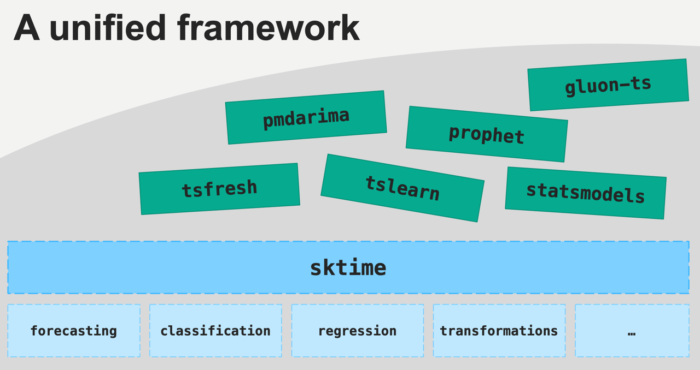
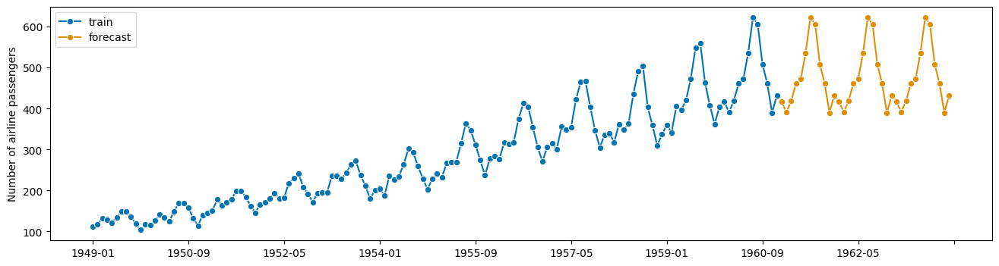

Introduction to sktime#
Vision statement#
an easy-to-use, easy-to-extend, comprehensive python framework for ML and AI with time series
open source, permissive license, free to use
openly and transparently governed
friendly, responsive, kind and inclusive community, with an active commitment to ensure fairness and equal opportunity
an academically and commercially neutral space, with an ecosystem integration ambition and neutral point of view
an educational platform, providing mentoring and upskilling opportunities for all career stages, especially early career
sktime is a vibrant, welcoming community with mentoring opportunities! - We love new contributors. Even if you are new to open source software development! - Check out the sktime new contributors guide - join our discord and/or one of our regular meetups! - follow us on LinkedIn!
Further reading:
sktimenotebook tutorials on binderrecorded video tutorials
find a bug or type? tutorial feedback thread
Contents#
sktime provides a unified, scikit-learn-like toolbox interface to multiple time series learning tasks.
Section 1 explains what a scikit-learn-like toolbox is, using the example of scikit-learn.
Section 2 gives an overview of learning with time series and challenges in the space.
Section 3 gives a high-level engineering overview of sktime.
1. sklearn unified interface - the strategy pattern#
sktime follows the sklearn / skbase interface: - unified interface for objects/estimators - modular design, strategy patterns - composable, composites are interface homogeneous - simple specification language and parameter interface - visually informative pretty printing
sklearn provides a unified interface to multiple learning tasks including classification, regression.
any (supervised) estimator has the following interface points
Instantiate your model of choice, with parameter settings
Fit the instance of your model
Use that fitted instance to predict new data!
the above in code:
[1]:
import warnings
warnings.filterwarnings("ignore")
[2]:
# get data to use the model on
from sklearn.datasets import load_iris
from sklearn.model_selection import train_test_split
X, y = load_iris(return_X_y=True, as_frame=True)
X_train, X_test, y_train, y_test = train_test_split(X, y)
[3]:
X_train.head()
[3]:
| sepal length (cm) | sepal width (cm) | petal length (cm) | petal width (cm) | |
|---|---|---|---|---|
| 68 | 6.2 | 2.2 | 4.5 | 1.5 |
| 116 | 6.5 | 3.0 | 5.5 | 1.8 |
| 138 | 6.0 | 3.0 | 4.8 | 1.8 |
| 87 | 6.3 | 2.3 | 4.4 | 1.3 |
| 0 | 5.1 | 3.5 | 1.4 | 0.2 |
[4]:
y_train.head()
[4]:
68 1
116 2
138 2
87 1
0 0
Name: target, dtype: int32
[5]:
X_test.head()
[5]:
| sepal length (cm) | sepal width (cm) | petal length (cm) | petal width (cm) | |
|---|---|---|---|---|
| 37 | 4.9 | 3.6 | 1.4 | 0.1 |
| 63 | 6.1 | 2.9 | 4.7 | 1.4 |
| 62 | 6.0 | 2.2 | 4.0 | 1.0 |
| 130 | 7.4 | 2.8 | 6.1 | 1.9 |
| 47 | 4.6 | 3.2 | 1.4 | 0.2 |
[6]:
from sklearn.svm import SVC
# 1. Instantiate SVC with parameters gamma, C
clf = SVC(gamma=0.001, C=100.0)
# 2. Fit clf to training data
clf.fit(X_train, y_train)
# 3. Predict labels on test data
y_test_pred = clf.predict(X_test)
y_test_pred
[6]:
array([0, 1, 1, 2, 0, 1, 0, 1, 2, 2, 0, 2, 1, 0, 2, 0, 0, 2, 2, 1, 1, 0,
2, 1, 1, 2, 2, 0, 0, 1, 2, 1, 1, 0, 1, 1, 0, 2])
IMPORTANT: to use another classifier, only the specification line, part 1 changes!
SVC could have been RandomForest, steps 2 and 3 remain the same - unified interface:
[7]:
from sklearn.ensemble import RandomForestClassifier
# 1. Instantiate SVC with parameters gamma, C
clf = RandomForestClassifier(n_estimators=100)
# 2. Fit clf to training data
clf.fit(X_train, y_train)
# 3. Predict labels on test data
y_test_pred = clf.predict(X_test)
y_test_pred
[7]:
array([0, 1, 1, 2, 0, 1, 0, 1, 2, 2, 0, 2, 1, 0, 2, 0, 0, 2, 2, 1, 1, 0,
2, 1, 1, 2, 2, 0, 0, 1, 2, 1, 1, 0, 1, 1, 0, 2])
in object oriented design terminology, this is called “strategy pattern”
= different estimators can be switched out without change to the interface
= like a power plug adapter, it’s plug&play if it conforms with the interface
Pictorial summary:
parameters can be accessed and set via get_params, set_params:
[8]:
clf.get_params()
[8]:
{'bootstrap': True,
'ccp_alpha': 0.0,
'class_weight': None,
'criterion': 'gini',
'max_depth': None,
'max_features': 'sqrt',
'max_leaf_nodes': None,
'max_samples': None,
'min_impurity_decrease': 0.0,
'min_samples_leaf': 1,
'min_samples_split': 2,
'min_weight_fraction_leaf': 0.0,
'n_estimators': 100,
'n_jobs': None,
'oob_score': False,
'random_state': None,
'verbose': 0,
'warm_start': False}
2. sktime is devoted to time-series data analysis#
Richer space of time series tasks, compared to “tabular”:
Forecasting - predict energy consumption tomorrow, based on past weeks
Classification - classify electrocardiograms to healthy/sick, based on prior examples
Regression - predict compound purity in bioreactor based on temperature/pressure profile
Clustering - sort outlines of tree leaves into a small number of similar classes
Annotation - identify jumps, anomalies, events in a data stream
sktime aims to provide sklearn-like, modular, composable, interfaces for these!
Task |
Status |
Links |
|---|---|---|
Forecasting |
stable |
|
Time Series Classification |
stable |
|
Time Series Regression |
stable |
|
Transformations |
stable |
|
Parameter fitting |
maturing |
|
Time Series Clustering |
maturing |
|
Time Series Distances/Kernels |
maturing |
|
Annotation |
experimental |
|
Distributions and simulation |
experimental |
Some examples below - details in the respective module introduction notebooks!
Example - forecasting
[9]:
from sktime.datasets import load_airline
from sktime.forecasting.naive import NaiveForecaster
# step 1: data specification
y = load_airline()
# step 2: specifying forecasting horizon
fh = range(1, 37)
# step 3: specifying the forecasting algorithm
forecaster = NaiveForecaster(strategy="last", sp=12)
# step 4: fitting the forecaster
forecaster.fit(y)
# step 5: querying predictions
y_pred = forecaster.predict(fh)
[10]:
from sktime.utils.plotting import plot_series
fig, ax = plot_series(y, y_pred, labels=["train", "forecast"])

Example - classification
[11]:
from sktime.classification.distance_based import KNeighborsTimeSeriesClassifier
from sktime.datasets import load_osuleaf
from sktime.dists_kernels import ScipyDist
from sktime.dists_kernels.compose_tab_to_panel import FlatDist
# step 1 - specify training data
X_train, y_train = load_osuleaf(split="train", return_type="numpy3D")
# step 2 - specify data to predict labels for
X_new, _ = load_osuleaf(split="test", return_type="numpy3D")
X_new = X_new[:2]
# step 3 - specify the classifier
mean_eucl_dist = FlatDist(ScipyDist())
clf = KNeighborsTimeSeriesClassifier(n_neighbors=3, distance=mean_eucl_dist)
# step 4 - fitting the classifier
clf.fit(X_train, y_train)
# step 5 - predict labels on new data
y_pred = clf.predict(X_new)
[12]:
X_train.shape
[12]:
(200, 1, 427)
[13]:
y_train.shape
[13]:
(200,)
[14]:
X_new.shape
[14]:
(2, 1, 427)
[15]:
y_pred.shape
[15]:
(2,)
3. sktime integrates the time series modelling ecosystem!#
the package space for time series is highly fragmented:
lots of great implementations and methods out there!
but many different interfaces, not composable like
sklearn
sktime integrates the ecosystem - in friendly collaboration with all the packages out there!
unified interface standard
highly composable
mini-package manager on estiator/module level
easily extensible - 3rd party plugins, other packages
4. Summary#
sklearninterface: unified interface (strategy pattern), modular, composition stable, easy specification languagesktimeevolves the interface for time series learning taskssktimeintegrates a fragmented ecosytem with interface, composability, dependency management
Citations & credits in academic research papers:
sktime toolbox: sktime: A unified interface for machine learning with time series
sktime design principles: Designing machine learning toolboxes: Concepts, principles and patterns
Generated using nbsphinx. The Jupyter notebook can be found here.